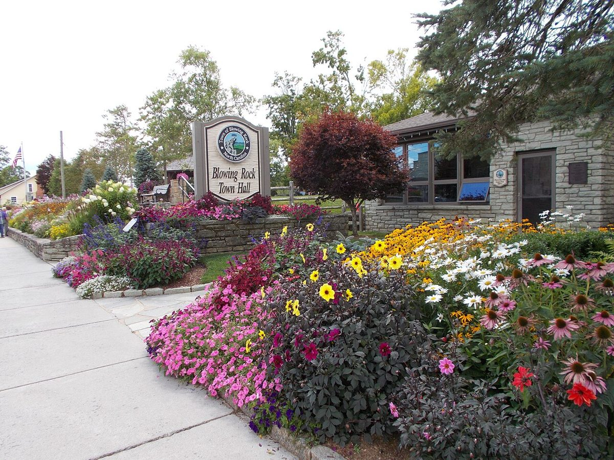

Easy outdoors · Bass Lake
The flat lakeside loop is 0.8 mile, accessed from parking at 1 Bass Lake Drive off US 221. Allow about 30–45 minutes. Do not confuse it with the longer carriage-road routes.
NORTH CAROLINA · MOUNTAIN AFTERNOON
Pair a short walk with a free museum visit, then decide whether to stay around Blowing Rock or drive to a proposed room in Boone.
THE FEEL OF THE PLACE
Blowing Rock feels like a compact mountain holiday village: Main Street shops, a small park, cafés and an art museum, with lake walks close enough to pair with town time. It suits an unhurried Tuesday afternoon after Linville. Pick a walk and a warm lunch, then stay for the museum or continue to Boone for the evening recital.

Representative photograph from the linked archive; seasons and current conditions will differ.
A SUGGESTED RHYTHM
The flat lakeside loop is 0.8 mile, accessed from parking at 1 Bass Lake Drive off US 221. Allow about 30–45 minutes. Do not confuse it with the longer carriage-road routes.
The NPS lists the Price Lake loop as 2.7 miles and moderate. Allow roughly 1½–2 hours if current trail and road access permit. Choose this instead of stacking several walks into the afternoon.
Field Studies: Ways of Knowing Place in Southern Appalachia runs June 13, 2026–January 9, 2027. Tuesday hours are 11am–5pm, admission is free and the adjacent parking deck is free. Allow 45–90 minutes at 159 Ginny Stevens Lane.
EAT WELL, KEEP IT SIMPLE
Casual choices for this stop, with restaurant information and independent reviews or local guides to help you choose. Published prices exclude extras unless noted; recheck hours before setting off.
An informal Main Street sports bar for burgers, sandwiches and pub food; convenient when you want to eat without adding another driving stop.
Budget: Casual budget-to-moderate choice; current dine-in item prices were not verified.
When to go: Official Tuesday hours: 11am–midnight; confirm kitchen closing time.
Colorful Main Street pizza restaurant. Sharing a pizza is the economical approach; useful before continuing to Boone.
Budget: Shared-pizza option; current dine-in prices not verified. Delivery-platform prices are not used as dine-in quotes.
When to go: Town tourism lists Tuesday 11am–9:30pm; official location page was not confirmed, so reconfirm.
CHECK BEFORE YOU GO
Road and trail conditions can change with weather and repairs. Driving and visit durations are planning allowances, not live navigation. Recheck opening hours and dated events shortly before travel.